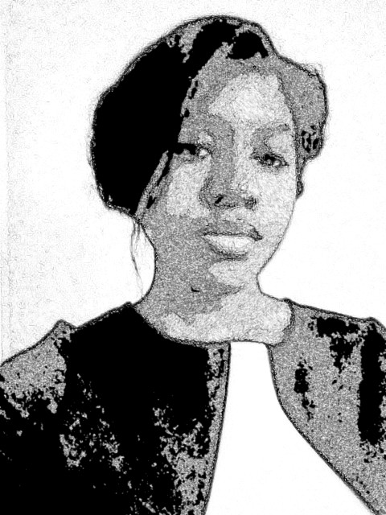

About Me
I am a Freelance software developer born and raised in Charlotte, NC. I am very a passionate person but with a laid back attitude. I enjoy technology, altruism, and history.
On May of 2015, I obtained a B.Sc. from the University of North Carolina Charlotte (UNCC), with the goal of working in a software development field. What I am looking for now is the opportunity to be part of a team that allows professional growth and apply a positive impact on technological innovation.